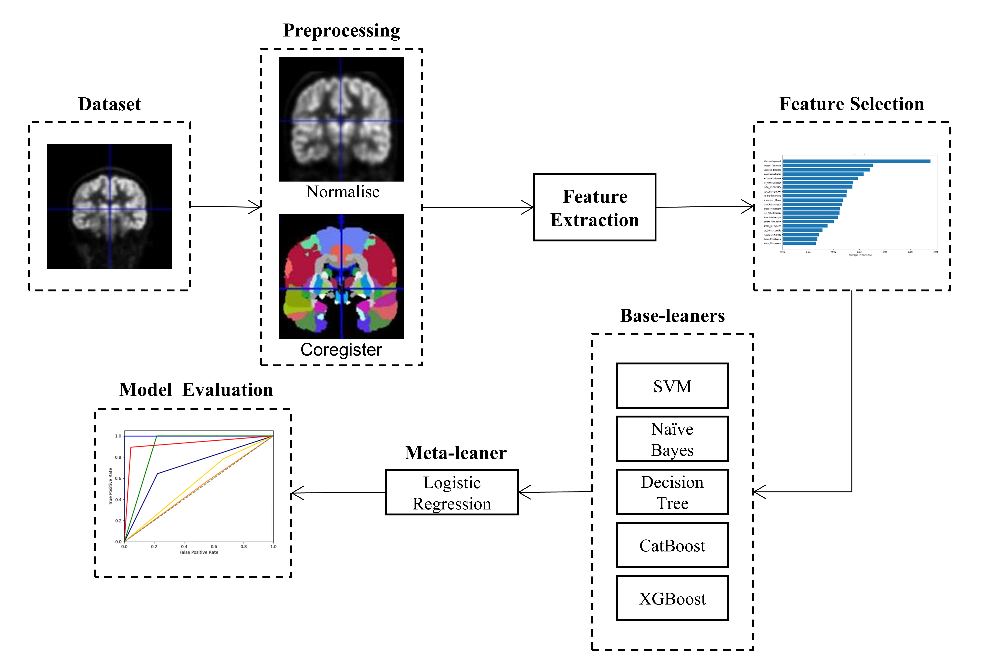

|
Yuhang Liu
I'm a fourth-year undergraduate student at the University of Electronical Science and Technology of China (UESTC), majoring in Communication Engineering. My research focuses on computer vision and machine learning. I am particularly interested in continual learnging and intelligent communication.
I am excited to embark on my graduate studies at School of Information Science and Technology, Fudan University in Sep. 2025.
Email /
CV /
Github
|
|
|
May 2024 » One paper is accepted by CISP-BMEI 2024.
|
|
|
Research on Low Communication Overhead Scheme of Over-the-Air Federated Learning Over MIMO-OFDM Channels
Yuhang Liu, Chenxi Zhong, Xiaojun Yuan
In progress
Undergraduate Thesis
|
|
|
H2ST
Yuhang Liu, Wenjie Zhao, Yunhui Guo
Under Review
H2ST
|
|

|
Biomarker Importance Analysis for Autoimmune Encephalitis with PET
Yuhang Liu, Yurui Wang, Zhiyuan Ding, Yan Liu, Xiujuan Wang, Leilei Yuan, Tao Cui, Ling Wang
CISP-BMEI, 2024
We investigate the pathogenesis of FBDS, a typical clinical manifestation of LGI1-AE, using machine learning methods such as random forest and ensemble learning.
This research is supported by UESTC Students' Innovation Training Program.
|
|
{kind=link}